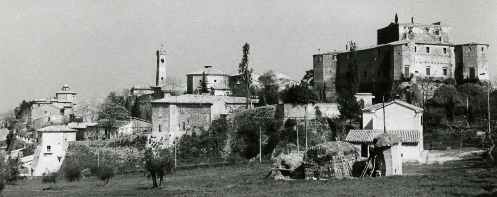

THE PROJECT
In this section you can find the description of the whole project which is divided into three main parts: project presentation, first idea and second idea. Here the table of content.
PROJECT PRESENTATION
DESCRIPTION OF THE PROJECT
The project aims to revitalize and pass on the ancient tradition of rust printing in Romagna, now carried out only by a few craftsmen located between Forlì, Cesena, Santarcangelo di Romagna and Rimini.
The project consists of two parts: the first is the creation of a 3D short film and the setting up of a cinema inside one of MET (Museo etnografico degli usi e costumi della gente di Romgana) rooms designed for a very wide audience, from elementary school children to middle and high school children, tourists, citizens of Romagna and all those who are interested in learning about this type of art. The focus of the documentary is on the history of rust printing and its production process, told through two main characters: Countess Eugenia Rasponi Marat, a character who really existed and owns the Malatesta castle in Santarcangelo, and Mastro Bernardo, a craftsman who together with his wife and sons produces rust prints.
The second part concerns a printing workshop where visitors can try to make a print on a white t-shirt, provided by the museum and included in the entrance ticket. In the workshop there are several stations of different heights, suitable for both children and adults, where everyone can choose the mold that they like and, thanks to a particular type of ink, designed to resemble as much as possible to the rust paste and able to resist over time, print their shirt, bringing home a very special and personal product. In this way, visitors are more involved in visiting the museum and actively encouraged to create an object that will allow other people to know the museum, thus establishing a process of word of mouth that will benefit the museum.
PROJECT JUSTIFICATION
The project is important in the context of the revitalization of an ancient tradition now almost unknown and disappeared. Unfortunately, today there are only few people who know this art. In schools there are no printing courses on fabric and the history of our traditions is not explained. This task is usually delegated to the MET, which has among its many rooms, a space dedicated to weaving and printing of fabrics. Unfortunately, however, the MET has been closed since 2017.
The main problem of rust printing is that there are no workshops where children and adults can experience this technique and learn about its origins. It is also important to say that the local craftsmen do not cooperate in this: they jealously guard their knowledge, handed down from generation to generation, and are not in favour of sharing it.
So I thought it was important to develop an idea that could give new life to this ancient art, making known its existence and its techniques of realization.
In the design phase, I assessed two possible risks of the project: the first is to be reclined, in a sense, to the MET, then not get the desired success, considering that the museum is located in a small village in the province of Rimini. The second risk that I have considered is that of arousing criticism among the purists of tradition, who could accuse the project of trivializing tradition.
GOALS AND REQUIREMENTS
The aim of the project is to create awareness in people of the existence of the art of rust printing and its precarious situation through a fun and permanent experience, thanks to the vision of the short film in 3D and the realization of printing on fabric. What I want to convey is the idea that traditions must be cultivated without forgetting the technological advance that allows today to develop new ways for the communication of tradition and make it an integral part of the cultural baggage of all people living in that area, from children to the elderly, making them experience of working as people once did in the countryside of Romagna. What is required of users is to get involved by experimenting to learn. It is not a forced and unidirectional learning but, on the contrary, engaging, open and fun.
SCRIPT
The project is developed in two rooms of the museum: the first part, that of the cinema, will occupy room D, while the laboratory part provides for the setting up of the laboratory in room E, the last room before the end of the museum. The route designed for visitors is as follows: after visiting all the previous rooms, they will reach the end of the museum and will have the opportunity to enter in the cinema. The short film, made with Blender and Unity, has a duration of 11 minutes and is designed to attract the attention of children and adults. Being a very short film it will be shown in loop in the cinema, which has a large capacity allowing the accomodation of 25-30 people at a time. The short film is intended to explain the printing process so that it can be done by visitors at the end of the film. In fact, in the next room there are 30 printing stations. The bookshop will also be in this room, so there will always be a person who will be able to distribute the t-shirts to be printed among the visitors and provide assistance. Each station has a support surface designed to print only one side of the t-shirt, two moulds with different designs, so that the users can choose the one they like best, and a particular rust-colored ink, designed to last over time and that does not require drying time. At each station an apron is available, so visitors can use it to avoid getting dirty with the ink. Above each station there is a screen that explains how to insert the t-shirt in the support to be printed and retraces step by step the passages of printing. In this way just few assistants are required. At the end of the workshop the t-shirts are ready to be worn.
USER DEFINITION
The project is designed for a wide audience, diversified by age. As the interview with Federica Foschi has shown, school groups are the main factor of presence in the museum, but this kind of experience will also attract many families with children, adults of various kinds and tourists. The museum is located, in fact, in the hinterland of a tourist area, a few kilometers from the beaches of the Riviera Romagnola. The short film has a simple language, easily understood by children and will be subtitled in English to be understood by foreign tourists. The printing stations, have different heights to be used comfortably by both children and adults.
RUST PRINTING
As stated in the Text of the Convention for the Safeguarding of the Intangible Cultural Heritage, rust print falls within the category E (traditional craftsmanship) of the second point of article no. 2.
The origin of the rust print can be traces back to poor craftsmanship: wooden molds, colors obtained from rust, fabric made from hemp. Unfortunately, there are numerous difficulties in genealogical reconstruction of rust printing and a lack of scientific studies around this unique expression of material culture. The oldest documents on Romagna's canvases date back to the first decades of the 19th century.
Printing on fabric was the embroidery of the poor who had designs printed on the tablecloth and especially on the blankets of the oxen. The fortune of this type of handicraft derives precisely from the requests of the poor people who led to elaborate different ornaments.
The modest cultural role and the type of market can justify the silence of official sources on this art, whose memory is mainly entrusted to the oral tradition.
For these reasons, it is necessary to find digital and other tools that can safeguard the tradition, making it known to young people, and trying to pass on and save an art that is almost disappearing.
Read more about rust print
MET - Museo Etnografico degli Usi e Costumi della Gente di Romagna
The Ethnographic Museum of the Uses and Customs of the People of Romagna is located in Santarcangelo di Romagna, in the hinterland of Rimini. It was inaugurated in 1981 thanks to the work of collecting material from Romagna started in the 60s by the "Ethnographic Committee", originally only a group of volunteers, led by Giuseppe Sebesta.
The Ethnographic Centre for Research and Documentation was opened in 1985, and the research and documentary production campaigns were launched and systematically organised. With this centre, the museum provides itself with archives and instruments for scientific dissemination, setting up research laboratories to promote the study of popular traditions, the production of audiovisual documentation, texts, periodical exhibitions, conferences, study days and educational initiatives.
Read more about MET
FIRST IDEA: 3D SHORT FILM
The idea of a 3D short film was born by studying the history of rust printing. On the top of Mount Giove, in Santarcangelo di Romagna, stands the Rocca Malatesta built in the IX century. In 1902 the Countess Eugenia Rasponi Murat, niece of Princess Luisa Giulia Murat, daughter of Carolina Bonaparte (sister of Napoleon) and Gioacchino Murat, bought the fortress and made it her home, decorating the interior walls with the popular rust prints made by local craftsmen.
I chose to use this character as a guide for the short film, with the hope of conveying to visitors of museum the same passion of the Countess for rust prints.
I contacted the current owner of the Rocca Malatestiana, Donna Marina Colonna dei Principi di Palliano, niece of Countess Rasponi, to ask for more information about her aunt. Together with the information I needed to learn more about the story of Countess Eugenia Rasponi, she kindly provided me with two photographs of her aunt, known as Zia Antinì.
Thanks to this important information I was able to create the 3D model of the countess, that you can find below.
The other characters that appear in the short film are a nice old man, Mastro Bernardo, craftsman of Santarcangelo, his wife, Teresa, and his sons, Claudio and Pietro, and all together produce rust prints in a shop. These characters are totally fictional, but they are of fundamental importance to be able to teach users all the steps of rust printing.
The place chosen to show the short film is room D of the MET, which will be completely transformed into a cinema suitable for 25-30 people. Below the 3D model of the cinema proposal.
MAIN CHARACTER: Countess Eugenia Rasponi Murat
Photo provided by Donna Marina Colonna dei Principi di Palliano. All right reserved to Castello di Santarcangelo di Romagna.
Before proceeding with the 3D modeling of the Countess, I gathered all the information needed to make her character as good as possible. Unfortunately, we don't know much about her private life, but you can see a photograph, kindly granted by the current owner of the Rocca Malatesta, which portrays the Countess Eugenia Rasponi Murat. The photograph dates back to the beginning of the XX when the countess was about 30 years old. The programs used to make the 3D character are Blender and Adobe Fuse.
View of Santarcangelo di Romagna, 1972, Paolo Monti - Available in the BEIC digital library and uploaded in collaboration with the Fondazione BEIC. The image comes from the Fondo Paolo Monti, owned by BEIC and located at the Civico Archivio Fotografico of Milan, CC BY-SA 4.0, Link.
Some steps of modelling phase
Blender 3D modelling of the dress.
Adobe Fuse 3D modelling of the character.
The final result
Author Michela Parma.
This work is licensed under a Creative Commons Attribution-NonCommercial-ShareAlike 4.0 International License.
Go to the model.
SCREENPLAY FOR THE SHORT FILM
The screenplay for the short film has been written according to the guidelines for scripts provided by www.writersstore.com and www.finaldraft.com. To calculate the duration of a movie we can use the number of pages: if written correctly following the guidelines, we can calculate an average time of 1 minute of film per page. This short film last 11 minutes.
THE CINEMA
The room has been realized with Sketchup through the map of the museum provided by Google Maps. Therefore, the measurements of the building can not be considered correct, but plausible. However, I have calculated that the cinema can accomodate 25-30 people. The room has 6 windows, 4 on the side and 2 on the other, for which curtains have been designed so that they can be completely obscured during the projection of the short film, but they can be opened if necessary (for example, for conferences or other meetings). The armchairs have been positioned at a high distance from each other, so that safety regulations can be respected.
3D VISUALISATION OF CINEMA AND LAB
Here you can find the 3D visualisation of the cinema and the printing laboratory created with Sketchup and uploaded on 3D Warehouse.
SECOND IDEA: THE PRINTING LABORATORY
The workshop has been designed as a tool to put into practice the knowledge acquired during the visit of the museum and in particular through the vision of the short film. The idea is to stimulate the visitor to make a special experience, to print a T-shirt that can be taken home as a souvenir of the visit. This aspect has a double purpose: first of all, to leave the visitor with a good memory of the visit, and then to communicate the experience to friends and acquaintances, and to advertise the museum through the use of the shirt by the visitor, if worn. Considering that the major users of the museum are school groups, I estimated an average of 30 pupils per class. As a result, the laboratory has 30 workstations (which can be increased or decreased depending on the possibilities of the museum).
WORKSTATIONS
The workstations are designed to adapt to children and adults, so they can be adjusted, raising or lowering them, depending on the height of the user through a system of levers, similar to that of adjustable office chairs, easily usable by anyone. Before starting the workshop, each user will be provided with a white T-shirt, which is included in the price of the admission ticket. The work table has a front wall on which is placed a panel that summarizes the steps for printing through explanatory images, so following step by step the figures will be very easy to make printing on the t-shirt.
FRAME AND MOULD
On the worktop of each table there is a frame: the T-shirt must be inserted in the frame so as to print only one side. Each table has a mould at its disposal, which is located on a support surface designed to absorb excess ink. The material chosen for the realization of the moulds is wood and silicone. Unfortunately, it is not possible to make traditional pear wood moulds because pear wood is a very soft wood, suitable to be engraved, but very fragile, therefore not suitable to be handled by inexperienced users. The choice of silicone reflects the need for prolonged use over time, ensuring a more than satisfactory result.
PAD AND INK
On the right of the frame there is a resealable pad that automatically releases on the surface the ink needed to print the mold and print the T-shirt. The ink chosen for the laboratory is a rust-coloured water-based ink, used in screen printing, which tends to penetrate the fabric, to simply air dry in a very short time and to resist washing. Rust paste cannot be used for several reasons: first of all, it requires a manual production, in fact it is not available on the market already ready; secondly, it requires a high drying time and requires numerous fixing washes.
I am aware that this choice may arouse a lot of criticism from traditional purists, but the objective of the laboratory is to make users try to follow, as far as possible, the printing process and let them touch some aspects of the tradition with their own hands.
3D VISUALISATION OF WORKSATATION
Here you can find the 3D visualisation of the workstation created with Sketchup and uploaded on 3D Warehouse.
Click here for the 3D visualisation of the laboratory.